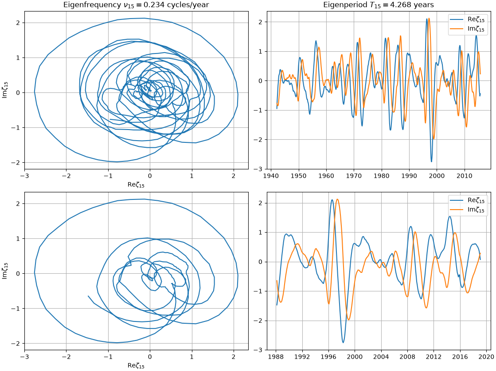
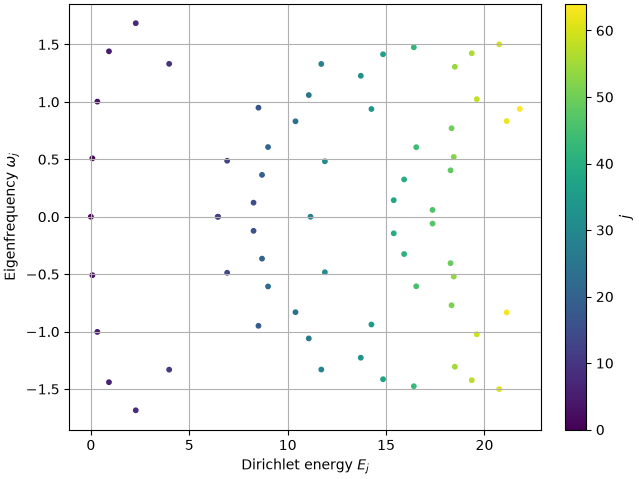
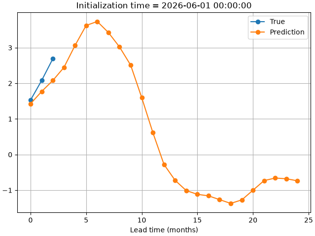
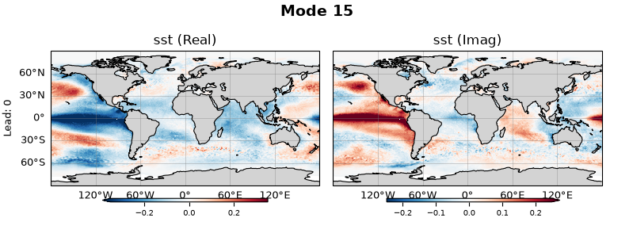

Experiments
ENSO from monthly data, the MJO from daily data, station forecasts, and the Lorenz 63 test system
In the toolkit, an experiment is a complete set of settings: which data to use, how to embed them, which kernel, how many eigenfunctions, what to forecast and how far ahead. In the example scripts, each experiment is a member of the script’s Experiment list and a case of its from_experiment() function, which builds all the parameter objects. Choosing an experiment is then a single switch at the top of the script:
EXPERIMENT: Experiment = Experiment.ELNINO_2027_FROM_ERA5_NINO34SST| Experiment | Data | Script in the repository | Status |
|---|---|---|---|
| ENSO: Koopman modes of sea surface temperature | Monthly ERA5 | koopman_diffusion_regularization_kaf.pyin examples/enso/ |
In the repository |
| ENSO: forecasts of the Niño 3.4 index | Monthly ERA5 | kernel_analog_forecasting.pyin examples/enso/ |
In the repository |
| MJO: Koopman index and forecasts | Daily ERA5 | — | Configuration below; script not yet in the repository |
| Station forecasts | Daily station records, ERA5 | — | Configuration below; script not yet in the repository |
| Lorenz 63 test system | Simulated | Four scripts in examples/lorenz63/ |
In the repository |
The scientific background of each experiment is in the Demonstration section. This page is about how the experiments are set up in the code.
The two ENSO scripts work with monthly ERA5 sea surface temperature (SST). The Koopman script extracts patterns of variability, such as the annual cycle, ENSO and the trend, as Koopman eigenfunctions, and then forecasts one of them. The kernel analog forecasting script forecasts the Niño 3.4 index directly.
Kernel analog forecasts of the Niño 3.4 index
Script: examples/enso/kernel_analog_forecasting.py
| Setting | NINO34_FROM_ERA5_NINO34SST |
ELNINO_2027_FROM_ERA5_NINO34SST (default) |
|---|---|---|
| Purpose | Hindcasts of the Niño 3.4 index | Real-time forecast of the 2026/27 El Niño |
| Predictors | ERA5 SST over the Niño 3.4 box (190°E–240°E, 5°S–5°N), every 4th grid point, standardized; the annual cycle is kept | Same |
| Target | Niño 3.4 index: SST averaged over the box, minus its 1940–2019 monthly climatology | Same, with the 1940–2026 climatology |
| Training period | January 1940 – December 2019 | January 1940 – August 2026 |
| Test period | January 2018 – December 2025 | January 2009 – August 2026 |
| Delay window | 13 months (num_half_delays=6) |
Same |
| Kernel | Cone kernel (ζ = 0.99) on SST and its rate of change; variable bandwidth; diffusion-maps normalization ("fokkerplanck"); 512 eigenfunctions |
Same |
| Forecast | Lead times 0–24 months, using all 512 eigenfunctions | Same |
| Extra samples after the data | None set; add num_after=num_pred_steps to the training and test data (see the note below) |
Training data: 24 months (num_after=num_pred_steps) |
| Other output | Global SST projected onto kernel eigenfunctions 0–3 | Same |
| Data in the repository | Yes, once num_after is added (see A first run) |
No: needs ERA5 files to August 2026 |
Koopman modes and their forecasts
Script: examples/enso/koopman_diffusion_regularization_kaf.py
| Setting | ENSO_FROM_ERA5_IPSST (default) |
ENSO_FROM_ERA5_NINO34SST |
|---|---|---|
| Purpose | Koopman modes of Indo-Pacific SST: annual and semiannual cycles, ENSO, trend | Koopman analysis of Niño 3.4 SST |
| Predictors | ERA5 SST over the Indo-Pacific (28°E–290°E, 60°S–20°N), every 4th grid point, standardized; the annual cycle is kept | ERA5 SST over the Niño 3.4 box, every 4th grid point, standardized |
| Training period | 1940–2019 | 1940–2019 |
| Test period | 1986–2022 | 2016–2025 |
| Delay window | 49 months (num_half_delays=24) |
Same |
| Kernel | Euclidean distance with a variable bandwidth (CONE_KERNEL = False), bandwidth factor 1.5, "fokkerplanck", 512 eigenfunctions |
Same, computed in batches to save memory |
| Koopman generator | Diffusion regularization τ = 0.01; 256 basis functions; 65 eigenfunctions sorted by Dirichlet energy; 4th-order finite differences | τ = 0.005; 64 basis functions; 65 eigenfunctions |
| Forecast | Kernel analog forecast of the real part of Koopman eigenfunction 17, lead times 0–24 months | Same, eigenfunction 3 |
| Other output | Koopman modes: global SST projected onto eigenfunctions 0–24 | Global SST projected onto eigenfunctions 0–3 |
| Data in the repository | No: needs ERA5 files | Yes |
- The annual cycle is kept in the predictors. The predictors are standardized but their climatology is not removed (
Climatology(remove=False, standardize=True)). The kernel then “sees” the season, which lets the Koopman analysis separate the annual cycle, ENSO and their combinations, and lets the forecasts depend on the season of the initial time. The forecast target, in contrast, is an anomaly (remove=True). - Test and training periods overlap. In all four experiments the test period overlaps the training period, entirely in the case of
ELNINO_2027_FROM_ERA5_NINO34SST, whose aim is the latest forecast rather than a measurement of skill. Skill computed over the overlap is partly in-sample. For independent hindcasts, start the test period after the training period ends. num_afterinNINO34_FROM_ERA5_NINO34SST. A kernel analog forecast to 24 months needs the 24 months after each training sample, reserved withnum_after. This experiment does not set it, so addnum_after=num_pred_stepsto the training data, and to the test data for the skill scores. The data shipped in the repository were prepared this way.- Which eigenfunction is ENSO. Koopman eigenfunctions are sorted by Dirichlet energy, so the index of the ENSO eigenfunction depends on the settings: 15 in the run shown below, 17 in the current settings of the script. Check the printed eigenvalue table, where ENSO appears as a pair with a period of about 3–5 years, before setting
idx_koopman_eig.
Example results
These figures were produced by the scripts and are included in the NLSA repository (BSD 3-Clause license).

ENSO_FROM_ERA5_IPSST), with a frequency of 0.234 cycles per year (period 4.3 years). Left: real against imaginary part, which rotate around the origin like an oscillator. Right: the two parts as time series. Top: training period. Bottom: out-of-sample values in the test period, computed with the Nyström extension.


ELNINO_2027_FROM_ERA5_NINO34SST), with observed values for the first months. An exploratory run: its training period extends to August 2026, so it includes the first observed months of the forecast.

The MJO results of the June 2026 progress review (a Koopman MJO index from daily OLR, 1975–2025, and its forecasts verified over 2025–2026) were computed with scripts that are not yet in the public repository. The settings below show how the experiment is assembled from the classes of version 0.4. Values written ___ are to be taken from the experiment logs when the script is published.
The MJO experiments of the demonstration (see ERA5 daily data) have two parts:
| Part | Predictors | Target | Lead times |
|---|---|---|---|
| MJO index | Daily outgoing longwave radiation (OLR), averaged over 15°S–15°N, 1975–2025 | The leading intraseasonal Koopman eigenfunction, the Koopman MJO index | 0–60 days, by kernel analog forecasting of the index |
| OLR forecasts | As above | OLR anomaly averaged over 5°S–5°N, 120°E–150°E | 0–60 days |
The Koopman script for ENSO already does both steps (Koopman eigendecomposition, then a kernel analog forecast of one eigenfunction), so the MJO experiment is a new case in a copy of examples/enso/koopman_diffusion_regularization_kaf.py. Its data settings differ from the ENSO ones in three ways: daily sampling, OLR instead of SST, and a strip of the tropics averaged over latitude.
class Experiment(StrEnum):
...
MJO_FROM_ERA5_OLR = auto()
"""Koopman MJO index from daily ERA5 OLR, and its forecast."""and, in from_experiment(), a new case:
case Experiment.MJO_FROM_ERA5_OLR:
cone_pars = ConePars(zeta=0.99) if cone_kernel else None
era5_io = era5.IO(input_path=ERA5_DAILY_DATA_DIR, file_format="nc")
time_sampling = "daily"
fd_order = 4
num_pred_steps = 60 # lead times 0-60 days
train_date_range = ("1975-01-01", "___")
test_date_range = ("___", "___") # after the training period
climatology_date_range = train_date_range
common_pars: CommonPars = {
"num_half_delays": ___, # window of 2*h + 1 days
"velocity_covariate": cone_pars is not None,
"velocity_fd_order": fd_order if cone_pars is not None else None,
}
strip = era5.Domain( # 15S-15N, all longitudes,
sampling="meridionally_averaged", # averaged over latitude
min_lon=0, max_lon=360, min_lat=-15, max_lat=15,
step_lon=___, # grid points averaged in longitude
)
box = era5.Domain( # forecast target
sampling="area_averaged",
min_lon=120, max_lon=150, min_lat=-5, max_lat=5,
)
def olr(domain, date_range, climatology):
return era5.DataSpecs(
vars=[era5.Var.AVG_TNLWRF],
domain=domain,
time=Time(date_range=date_range, sampling=time_sampling,
custom_climatology_date_range=climatology_date_range),
io=era5_io,
climatology=climatology,
)
train_data_pars = DataPars(
covariate=Covariate(specs=(olr(strip, train_date_range,
Climatology(remove=___, standardize=True)),)),
response=Response(specs=olr(box, train_date_range, Climatology(remove=True))),
num_before=fd_order // 2,
num_after=fd_order // 2 + num_pred_steps,
eval_batch_size=___,
**common_pars,
)
test_data_pars = DataPars(
covariate=Covariate(specs=(olr(strip, test_date_range,
Climatology(remove=___, standardize=True)),)),
response=Response(specs=olr(box, test_date_range, Climatology(remove=True))),
num_before=0,
num_after=num_pred_steps,
**common_pars,
)
bw_tune_pars = TunePars(num_bandwidths=128, log10_bandwidth_lims=(-3, 3))
tune_pars = TunePars(num_bandwidths=128, log10_bandwidth_lims=(-3, 3),
bandwidth_scl=___, bandwidth_batch_size=___)
kernel_pars = DmKernelPars(normalization="fokkerplanck",
eigensolver=___, # "eigh" or "eigsh"
num_eigs=___)
koopman_pars = KoopmanParsDiff(fd_order=fd_order, dt=1, antisym=True,
tau=___, which_eigs_galerkin=___,
num_eigs=___, sort_by="energy",
gram_batch_size=___)
pred_pars = PredPars(dt=1, num_steps=num_pred_steps,
idx_koopman_eig=___, # the MJO eigenfunction
which_kernel_eigs=___)
kernel_projection_pars = None
koopman_projection_pars = None # or a ProjectionPars for MJO maps
# ...followed by the same shardings block as the ENSO experimentsThings to know for this experiment:
- Sample count and memory. Fifty years of daily data give about 18,000 training samples, so the kernel matrix needs about 1.3 GB in single precision. The direct solver (
"eigh") needs several times that during the computation; on a GPU with less memory, useeigensolver="eigsh"with a few hundred to a few thousand eigenfunctions. See Choosing hyperparameters. - The sign of OLR. ERA5’s
avg_tnlwrfis the net longwave flux at the top of the atmosphere, which is negative. Its negative is the OLR. The sign makes no difference to the kernel or the forecasts, but flip it before reading the target as an OLR anomaly, where negative values mean enhanced convection. - Daily climatology. For daily data,
Climatology(remove=True)subtracts the mean of each day of the year over the climatology period. - Two forecast targets. The script above forecasts the Koopman MJO index. To forecast the OLR box average itself, use the kernel analog forecasting script instead, with the same data settings (
num_after=num_pred_stepsfor training and test data,PredPars(num_steps=60, ...)).
No station script is in the public repository yet. The Pituffik results of the June 2026 progress review (temperature forecasts from the station’s own temperature, pressure and wind, with skill to about 3 days) cannot yet be reproduced from it. The settings below use the station classes of version 0.4; values written ___ are to be filled in.
The station experiments of the demonstration (see Experiment design) forecast daily anomalies of temperature, pressure and wind at a station, at lead times of 1–14 days in the southwestern United States and the western Pacific and up to 5 days at Pituffik. They use kernel analog forecasting, so a station experiment is a new case in a copy of examples/enso/kernel_analog_forecasting.py.
Station data in the toolkit
| Region | Classes | Files expected |
|---|---|---|
| Southwestern United States and western Pacific (66 stations registered, including PGUA, PKWA and PWAK) | ws44.DataSpecs, ws44.Station, ws44.Var, ws44.IO |
One file per station, <ICAO code>_dailystats.csv, with columns YEAR, MO, DAY and one column per variable (temp_c_max, slp_mean, …) |
| Pituffik, Greenland | ws44.HighLatDataSpecs, ws44.HighLatStation, ws44.HighLatVar, ws44.HighLatIO |
A folder BGTL/ with CSV files that share an obs_date column; they are merged on that column |
The registered stations and the variables are listed on the Data page. Four of the seven western Pacific forward sites (PGUM, PGSN, PGWT, PGRO) are not yet registered in ws44.Station; adding a station is one line in that list.
Pituffik: station-only predictors
from nlsa_models import ws44
io_bgtl = ws44.HighLatIO(input_path="/path/to/pituffik") # folder containing BGTL/
num_pred_steps = 5 # lead times 0-5 days
def station_pars(date_range, num_after):
time = Time(date_range=date_range, sampling="daily",
custom_climatology_date_range=("___", "___")) # training period
predictors = ws44.HighLatDataSpecs(
vars=[ws44.HighLatVar.MEANTEMP, ws44.HighLatVar.MEANSLP,
ws44.HighLatVar.MEANSTP, ws44.HighLatVar.AVG_U_WIND,
ws44.HighLatVar.AVG_V_WIND],
stations=[ws44.HighLatStation.BGTL], time=time, io=io_bgtl,
climatology=Climatology(remove=True, standardize=True),
)
target = ws44.HighLatDataSpecs(
vars=[ws44.HighLatVar.MEANTEMP],
stations=[ws44.HighLatStation.BGTL], time=time, io=io_bgtl,
climatology=Climatology(remove=True),
)
return DataPars(covariate=Covariate(specs=(predictors,)),
response=Response(specs=target),
num_half_delays=___, num_after=num_after)
train_data_pars = station_pars(("___", "___"), num_after=num_pred_steps)
test_data_pars = station_pars(("___", "___"), num_after=num_pred_steps)
pred_pars = PredPars(dt=1, num_steps=num_pred_steps, which_eigs=___)Southwestern United States and western Pacific: three predictor sets
For the other regions, ws44.DataSpecs takes a list of stations and variables. The three predictor sets of the demonstration are three choices of the Covariate, whose data specifications are placed side by side:
time = Time(date_range=("___", "___"), sampling="daily",
custom_climatology_date_range=("___", "___")) # training period
io_ws = ws44.IO(input_path="/path/to/14ws/dailystats")
station = ws44.DataSpecs(
vars=[ws44.Var.TEMP_C_MEAN, ws44.Var.SLP_MEAN, ws44.Var.STP_MEAN,
ws44.Var.U_WIND_MPS_MEAN, ws44.Var.V_WIND_MPS_MEAN],
stations=[ws44.Station.KEDW], # Edwards AFB, an anchor site
time=time, io=io_ws,
climatology=Climatology(remove=True, standardize=True),
)
era5_fields = era5.DataSpecs(
vars=[era5.Var.MSL], # for example, sea-level pressure
domain=era5.Domain(sampling="coarsened", min_lon=___, max_lon=___,
min_lat=___, max_lat=___, step_lon=___, step_lat=___),
time=time, io=era5.IO(input_path="/path/to/era5/daily"),
climatology=Climatology(remove=True, standardize=True),
)
station_only = Covariate(specs=(station,))
station_plus_era5 = Covariate(specs=(station, era5_fields))
# station plus Koopman indices: not yet supported by a data class (see below)- Target.
Responsetakes one data specification with one station and one variable, for examplews44.DataSpecs(vars=[ws44.Var.TEMP_C_MEAN], stations=[ws44.Station.KEDW], ...). - Several stations as predictors. Listing several stations in
stations=[...]adds each station’s variables as further columns. - Weighting of the predictor blocks. Each data specification is standardized separately, so the balance between station and ERA5 predictors depends on how many columns each contributes (see Data). This balance is effectively a hyperparameter.
- Koopman indices as predictors. There is not yet a data class that reads the MJO or ENSO index into a
Covariate. The functionclimate.koopman_efuncs_to_data_frameexports Koopman eigenfunctions as a time-indexed table, which is the starting point for such a class. - Weekly and monthly means. Monthly means are available directly with
sampling="monthly", which averages the daily station values. Weekly means can be approximated with a 7-day running mean (Time(rolling_window=7, rolling_mode="center")) on daily data.
The Lorenz 63 system, a three-variable model of convection with chaotic dynamics, is the test case for checking the methods and measuring the speed of the code. The data are simulated by the toolkit (nlsa_models.lorenz63), so no files are needed, and the TEST experiments are small enough for a laptop.
| Script | What it does |
|---|---|
kernel_analog_forecasting.py |
Kernel analog forecast of the x component from the full state (x, y, z) |
kernel_analog_forecasting_iterative.py |
Iterative KAF: learns the one-step map of the state and applies it repeatedly |
koopman_diffusion_regularization.py |
Koopman eigenfunctions from the diffusion-regularized generator, and Koopman forecasts |
koopman_resolvent_compactification.py |
Koopman eigenfunctions from compactified Laplace or Gauss transforms (INTEGRAL_TRANSFORM switch) |
Each script has a TEST experiment (the default) for a laptop and larger experiments, sized for 40 GB NVIDIA A100 GPUs, that show how the code scales:
| Experiment | Training samples | Kernel eigenfunctions | Solver and hardware |
|---|---|---|---|
TEST |
4,096 | 512 | Direct solver ("eigh"), CPU or GPU |
A100_EIGH |
16,384 | 1,024 | Direct solver, one GPU |
A100_EIGSH |
65,536 | 2,048 | Iterative solver ("eigsh"), one GPU |
A100_EIGSH_2GPU |
131,072 | 4,096 | Iterative solver, data split over two GPUs |
The Lorenz 63 data parameters (lorenz63.DataPars) are listed on the Data page.